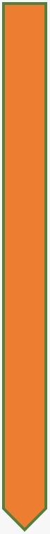

Van olijfboom tot olijfolie
In onze streek staan doorgaans 100 à 200 olijfbomen per hectare. Elke boom brengt gemiddeld 15 tot 50 kilogram olijven op. Het kan ook meer of veel minder zijn naargelang de grootte van de boom of de weersomstandigheden van het voorbije jaar. Afhankelijk van de soort heb je tussen de 4 en 7 kilogram olijven nodig voor één liter olijfolie.
De grootste uitdaging bij de teelt van olijven is de droogte, daarom telen we onze olijven op terrassen. Dankzij terrasbouw blijft het gevallen regenwater langer in de bodem aanwezig omdat het minder snel van de hellingen af vloeit. Andere vijanden van de olijf zijn de olijfvlieg en te hoge temperaturen waardoor de bloesems verschroeien.
Het jaarschema voor de productie van de olijfolie, ziet er in grote lijnen als volgt uit:

Februari en maart
Alle bomen worden gesnoeid. Goede snoei is belangrijk om de opbrengst te verhogen. Het snoeihout wordt verhakseld en rondgestrooid op het veld. Dit helpt tegen onkruid en tegelijkertijd verteert het als organische voeding in de bodem.

April, mei en juni
De velden worden bemest met schapenmest. Omdat we organisch en ecologisch werken, gebruiken we geen chemische bestrijdingsmiddelen (noch herbiciden, noch pesticiden). Geregeld verwijderen we ook het onkruid tussen de bomen omdat dit anders te veel van het al schaarse water van de bomen wegtrekt. Anderzijds laten we wel een strook met onkruid aan de rand van de terrassen staan als natuurlijk bestrijdingsmiddel. Zo creëren we een biotoop voor de natuurlijke vijanden van de olijfvlieg (een hardnekkige plaag!). Het kruid ‘Olivarde’ hebben we speciaal om die reden op het veld gezaaid.